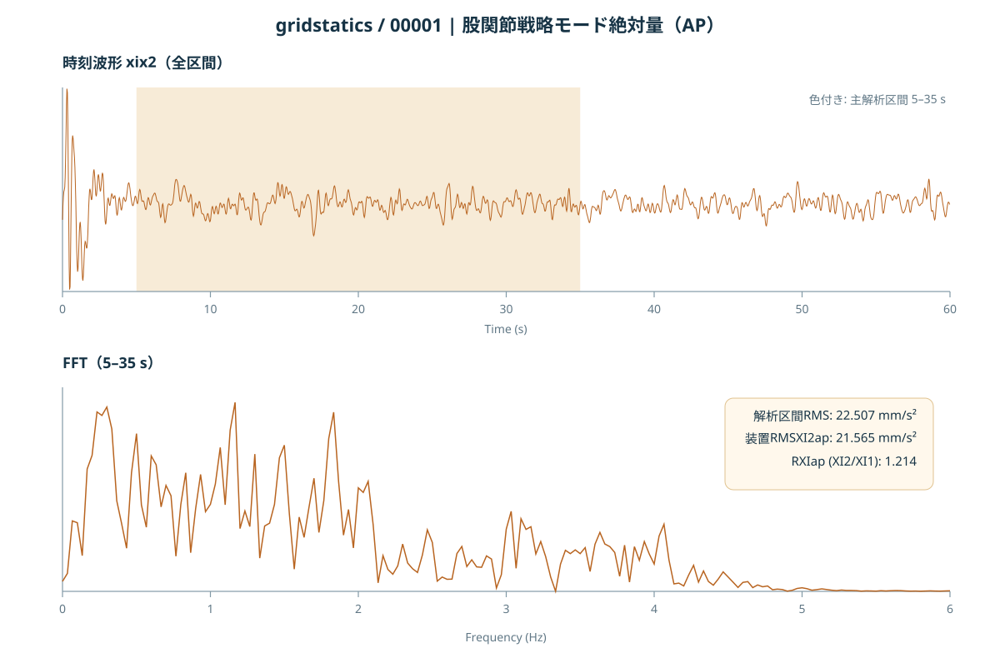
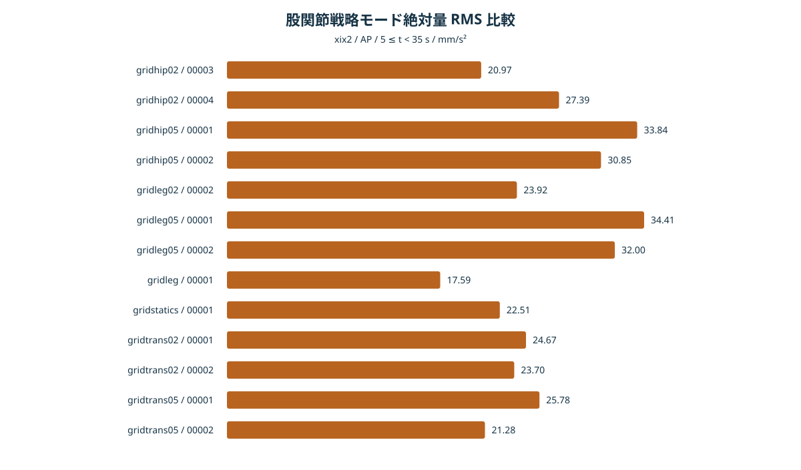
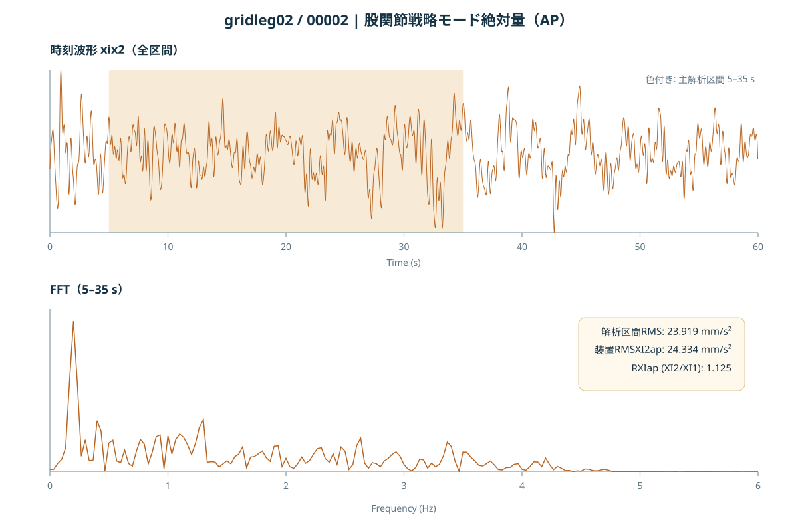
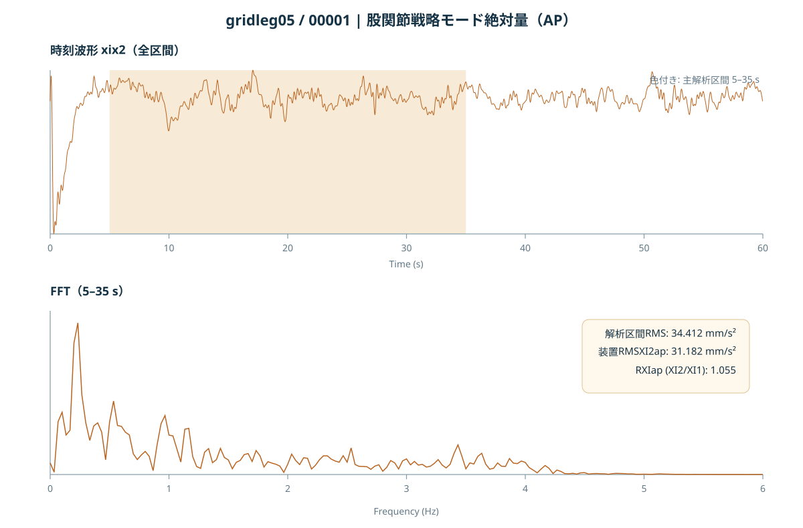
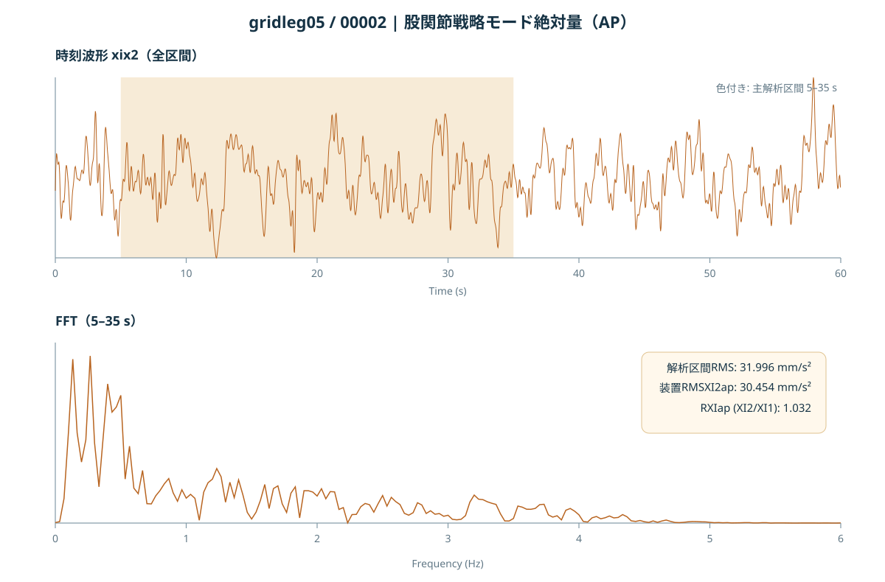
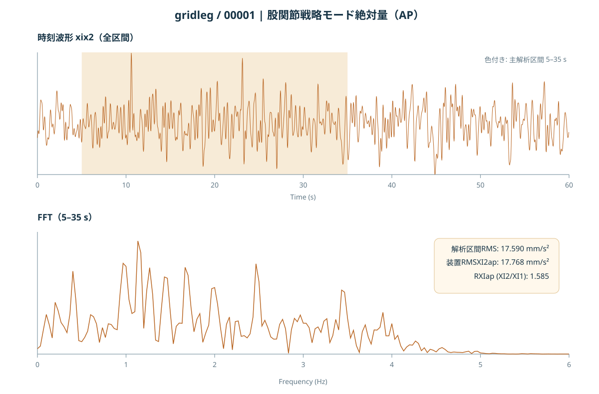
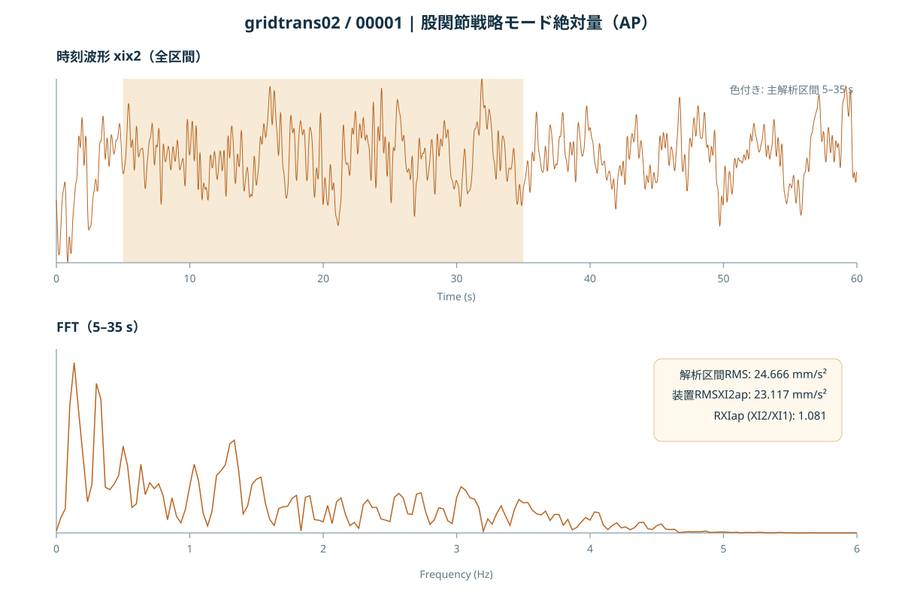
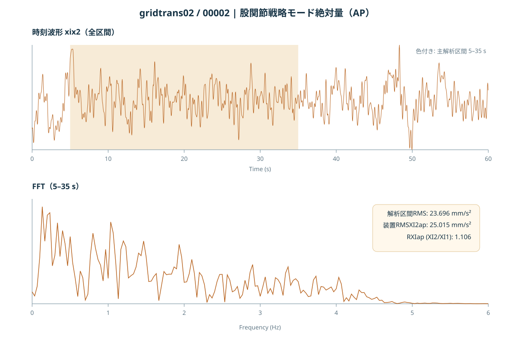
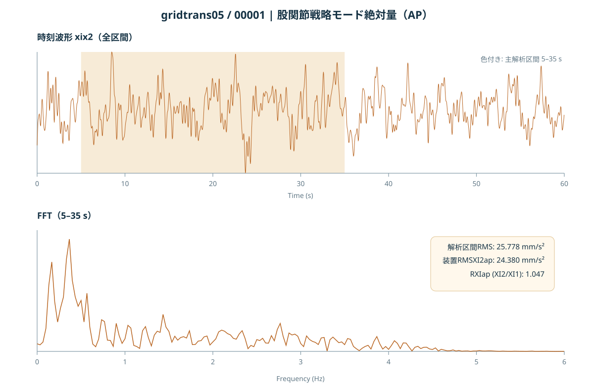
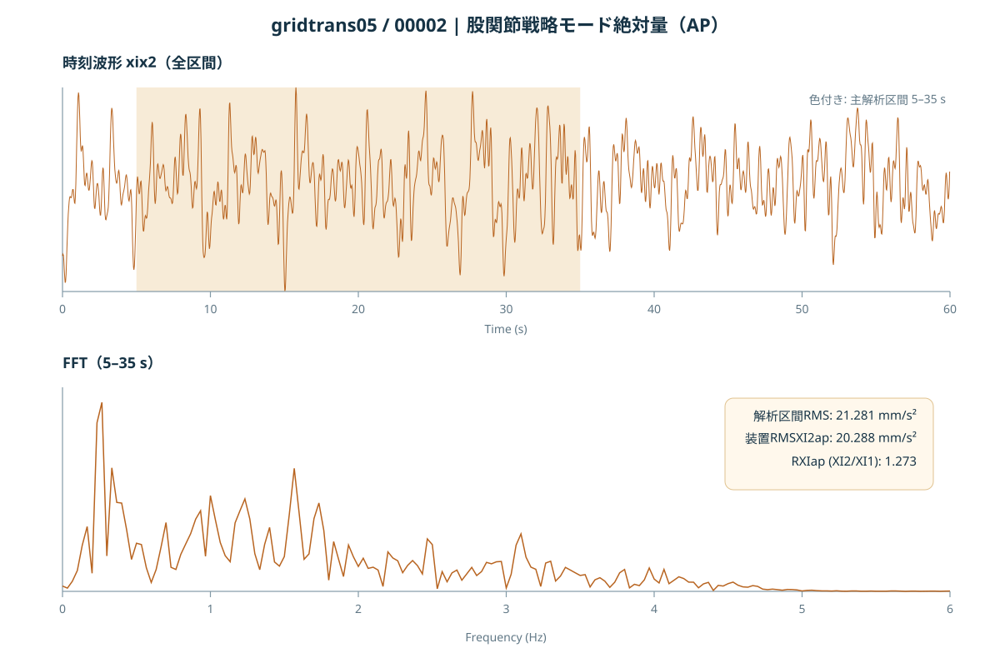

gridstatics / 00001
RMS 22.507 mm/s² / ピーク 1.17 Hz


寄与率ではなく、割合化前の股関節戦略モード xix2（AP方向、mm/s²）を解析しています。これは関節角度ではなく、身体運動を戦略基底へ分解したモード加速度相当量です。

FFT: 5–35秒、平均除去、Hann窓、片側振幅、0–6 Hz。横軸は1 Hz刻みです。
RMS 22.507 mm/s² / ピーク 1.17 Hz

RMS 23.919 mm/s² / ピーク 0.20 Hz

RMS 34.412 mm/s² / ピーク 0.23 Hz

RMS 31.996 mm/s² / ピーク 0.27 Hz

RMS 17.590 mm/s² / ピーク 1.13 Hz

RMS 24.666 mm/s² / ピーク 0.13 Hz

RMS 23.696 mm/s² / ピーク 0.13 Hz

RMS 25.778 mm/s² / ピーク 0.37 Hz

RMS 21.281 mm/s² / ピーク 0.27 Hz
